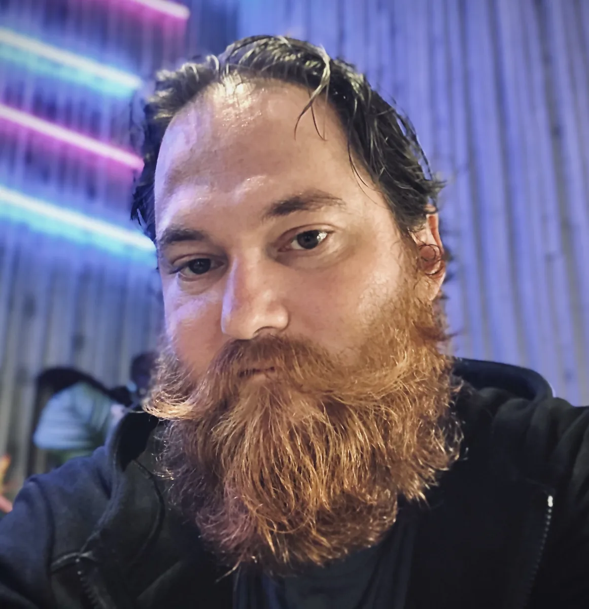

- MobileiOS and React Native
Built consumer and business apps and worked through the practical details of testing, store releases, and ongoing updates.
- ProductConcept through production
Work across product planning, user flows, prototypes, implementation, testing, releases, and maintenance.
- SystemsWeb, backend, and cloud
Built web software, APIs, integrations, and release infrastructure that support the customer-facing product.
- LeadershipTechnical direction and handoff
Led engineering work, coordinated across teams, inherited existing systems, and helped owners understand how to operate them.
- Open sourceMAVSDK-Swift
Maintained and contributed to a Swift library for applications that communicate with drone systems.
Brian Phillips / Unipheas
An engineer who sees
the whole process.
I’m an independent AI and software consultant with more than fifteen years across development and engineering leadership. Mobile is my specialty, and my work reaches from product concepts to live systems.
01 / Experience
Mobile development, with the full system behind it.

02 / My practice today
Helping businesses put AI to work.
I use AI in my own development process, and I help business owners apply it to their work.
That can mean connecting company knowledge and tools, building recurring workflows, supporting software maintenance, or teaching someone how to direct an AI tool and evaluate its output.
The value comes from understanding the business task and implementing the pieces around it: the information, the integrations, the checks, and the way people will use it.
Explore AI consulting03 / Working with me
Clear explanations. Hands-on work.
You speak directly with the person making the recommendation and doing the work.
I explain what I can verify, what is still uncertain, and how the options affect your business. I can work with your team or take on an agreed piece of delivery myself.
My role can span the first product conversation through release, or focus on the part where you need help most.
Start with a conversation
What would you like to build or improve?
An idea for an app, a better way to work, or a system that needs attention. Tell me where you want to go.
Let’s talk